What is Git
Git is a distributed version control system (DVCS) that tracks changes in code, offering a time machine-like ability to revert and collaborate efficiently. While other options like SVN and Mercurial exist, Git's speed and branching capabilities make it a standout. GitHub, a web platform built around Git, enhances collaboration with features like pull requests and issue tracking. Together, Git and GitHub form a powerful ecosystem, revolutionizing how developers manage projects and collaborate. In this blog, we delve into their intricacies to maximize their potential.
Installing Git
To check whether git is installed in your machine,open command prompt "cmd" and type git --version as shown below.
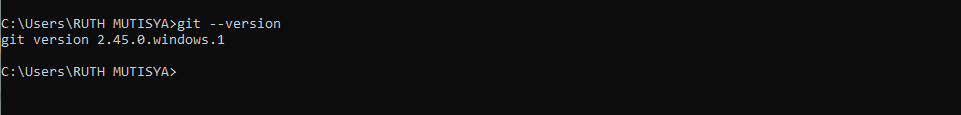
To download git into your machine follow the instructions given below:
- Visit the Git website and download the latest version for Windows.
- Run the downloaded installer file and follow the installation prompts.
- Once installed, open the command prompt and type git --version to verify the installation.
Configuring git
Before you start committing changes with Git, it's essential to configure your username and email address. This information is used to identify your contributions to the project.
Open your command line interface (CLI) or terminal and enter the following commands:
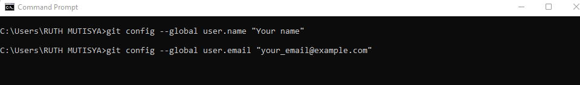
Replace "Your Name" with your actual name and "your_email@example.com" with your email address. This sets your global Git configuration, ensuring that your username and email are attached to all your commits.
Initializing a git Repository
A Git repository, or repo, is like a folder that Git is tracking. It contains all the files and directories for your project, along with the entire history of changes made to those files.
To initialize a Git repository for your project, follow these simple steps:
- Open your command line interface (CLI) or terminal.
- Navigate to the directory where your project files are located using the cd command.
- Once in the project directory, type the following command:
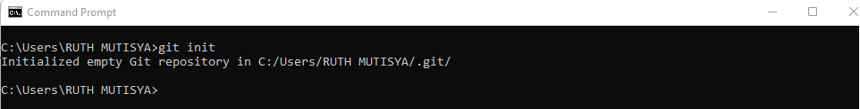
Adding files to staging area
The staging area, also known as the index, is a crucial concept in Git.Files in the staging area are ready to be committed to the repository.When you make changes to your files, Git identifies them as either tracked or untracked:
- Tracked Files:These are files that Git is aware of because they've been previously committed or added to the staging area. Any changes made to tracked files can be staged and committed.
- Untracked Files:These are files that Git doesn't recognize or track. They've never been staged or committed. You need to explicitly tell Git to start tracking them if you want their changes to be included in future commits.
Now, let's see how to add files to the staging area:
- After making changes to your files, use the following command to add them to the staging area:
- Once added, you can review the changes using git status to ensure everything looks good before committing.
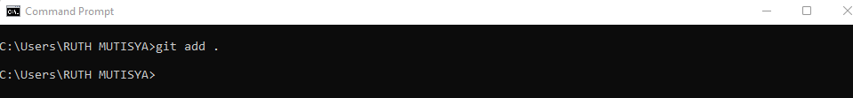
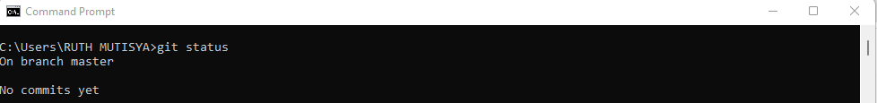
Committing changes
Committing changes in Git is like saving a snapshot of your project at a specific point in time. It records the changes you've staged in the staging area and adds them to the repository's history.
Here's how to commit changes and write good commit messages:
- Stage the changes you want to commit using git add or git add . to stage all changes.
- Once staged, commit the changes with a descriptive commit message using the following command:
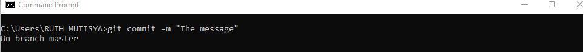
Replace "Your descriptive commit message here" with a concise and meaningful message that explains the changes you're committing. Good commit messages are clear, concise, and informative. They should answer the question: "Why is this change being made?"
how to view past commits and navigate through the commit history:
- To view the commit history, you can use the git log command. This will display a list of commits along with their commit messages, authors, timestamps, and commit IDs.
- If you want to go back to a specific commit, you can use the commit ID from git log and checkout to that commit using git checkout . This puts your repository in a "detached HEAD" state, allowing you to view the project at that specific commit.
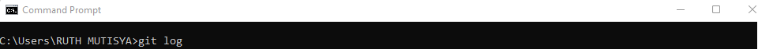
Branches
Branches in Git are essentially separate lines of development. They allow you to work on different features, fixes, or experiments without affecting the main codebase.
- Isolation of Work: Branches provide a safe environment to work on new features or bug fixes without disrupting the main codebase.
- Collaboration: Multiple developers can work on different features simultaneously by creating separate branches.
- Experimentation: Branches allow for experimentation and exploration of ideas without affecting the stability of the main codebase.
- Versioning and Release Management: Branches play a crucial role in versioning and release management. By creating branches for each release or version, you can maintain stable versions while continuing to develop new features in separate branches.
- Code Review and Quality Assurance: Branches facilitate code review and quality assurance processes.
Creating a branch
Creating a branch in Git allows you to diverge from the main codebase and work on new features or fixes without affecting the main branch. Here's how to create a new branch:
- Open your command line interface (CLI) or terminal.
- Navigate to your Git repository using the cd command.
- Use the following command to create a new branch: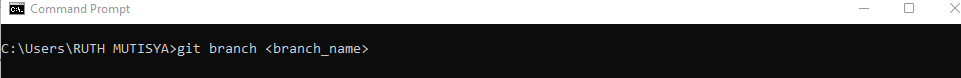
- To switch to the newly created branch, use the git checkout command: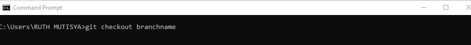
Viewing all branches
To view all branches present in a Git repository and identify the active branch, you can use the following commands:
- To list all branches in the repository, including both local and remote branches, use: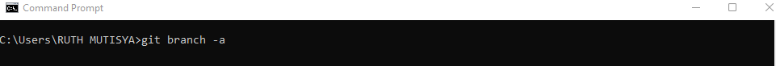
- To identify the active (checked out) branch, use:
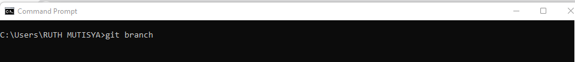
The active branch will be indicated with an asterisk (*) next to its name.
Switching active branches
- Open your command line interface (CLI) or terminal.
- Use the following command to list all branches and identify the branch you want to switch to:
- Once you've identified the branch you want to switch to, use the following command: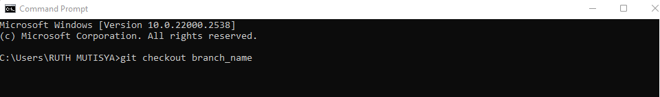
Replace with the name of the branch you want to switch to.
Merging a branch
Merging branches in Git allows you to combine the changes from one branch into another. Here's how to merge branches using a Git command:
- First, ensure you're on the branch where you want to merge changes. For example, if you want to merge changes from a feature branch into the main branch, switch to the main branch using: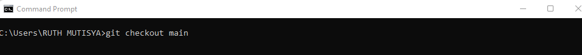
- Next, use the following command to merge the changes from the feature branch into the main branch: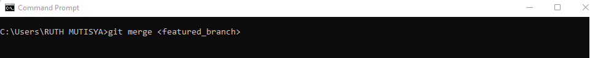
- Git will attempt to automatically merge the changes. If there are any conflicts (i.e., changes in both branches that cannot be automatically reconciled), Git will prompt you to resolve them manually.
- After resolving any conflicts and ensuring the merge is successful, commit the merge to complete the process.
Deleting a branch
Open your command line interface (CLI) or terminal.Use the following command to delete the branch:
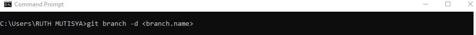
Replace branch_name with the name of the branch you want to delete. This command will delete the specified branch, but only if its changes are already merged into the current branch. If the changes are not merged, Git will prompt you to confirm deletion or use -D instead of -d to force deletion.
Next steps
- Branching Strategies: Explore different branching strategies like Gitflow, Feature Branching, or Trunk-Based Development. Understanding when and how to use branches effectively can greatly improve your development process.
- Merge Conflicts: Learn how to handle merge conflicts gracefully. As projects grow, conflicts become inevitable. Knowing how to resolve conflicts efficiently is a valuable skill for any developer.
- Git Rebase: Explore the Git rebase command, which allows you to reapply commits on top of another base tip. Rebase can be a powerful tool for maintaining a clean and linear commit history.
- GitHub: Dive into GitHub, a web-based platform built around Git, offering features like pull requests, issue tracking, and project management tools. Understanding how to leverage GitHub for collaboration and open-source contribution is essential for many developers.